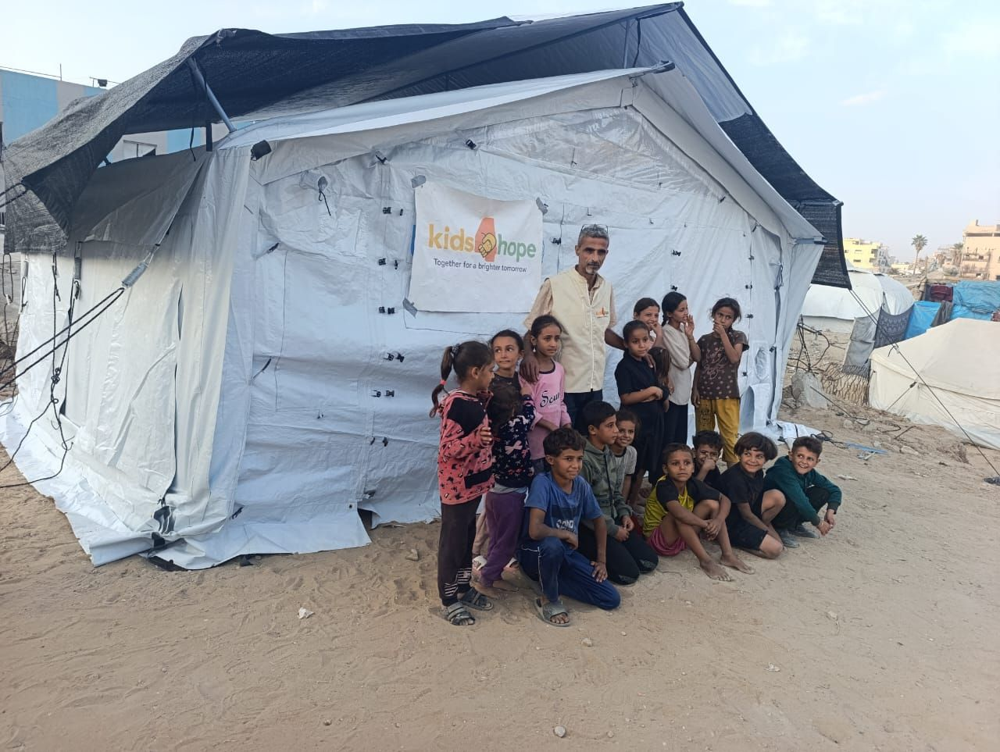
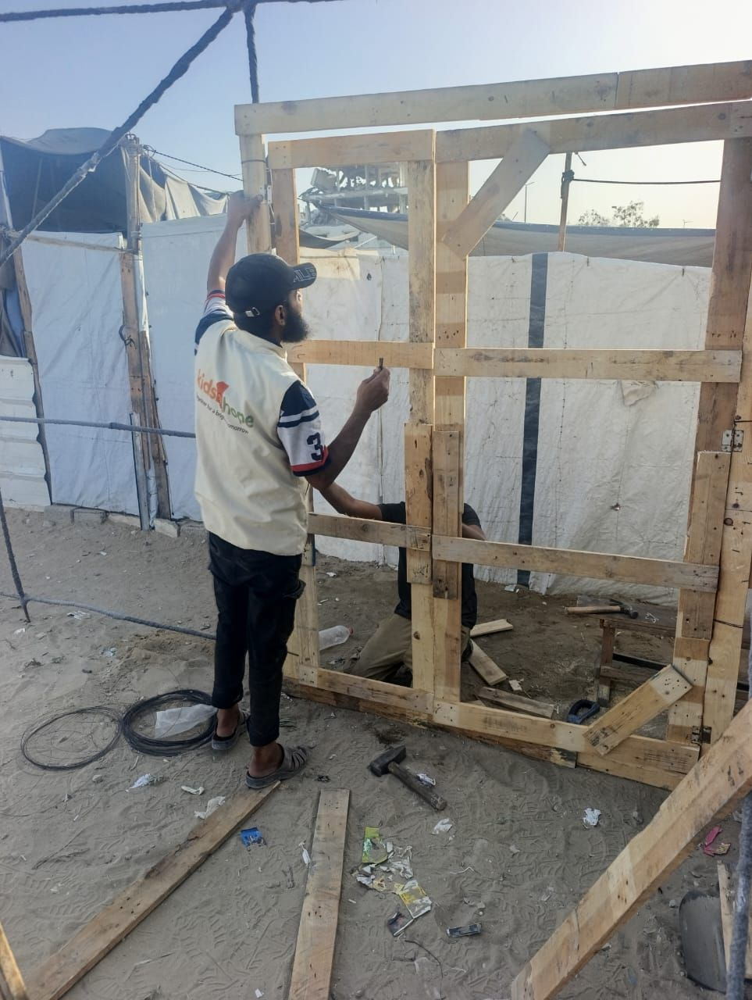
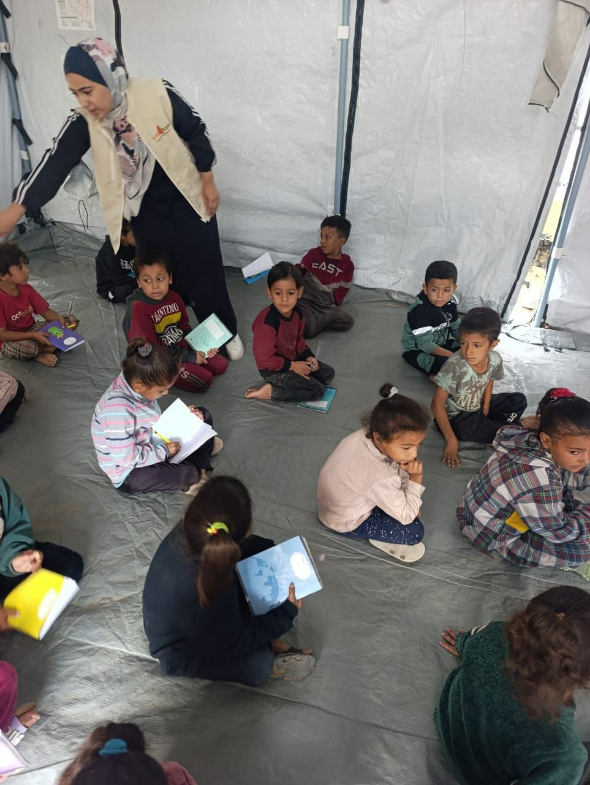
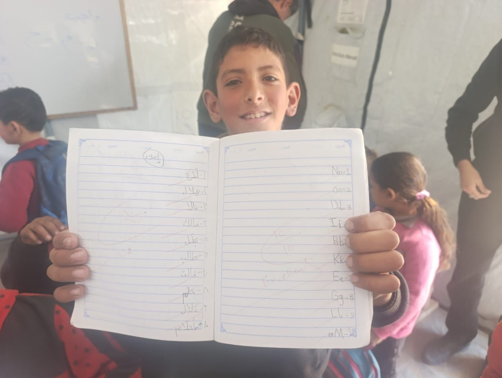
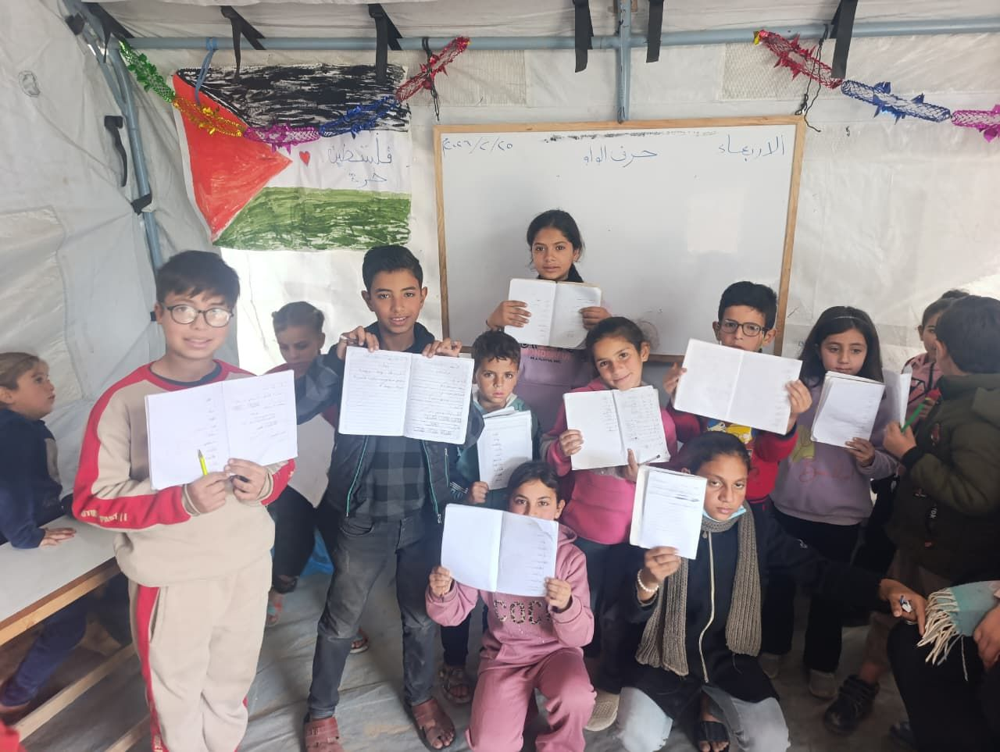
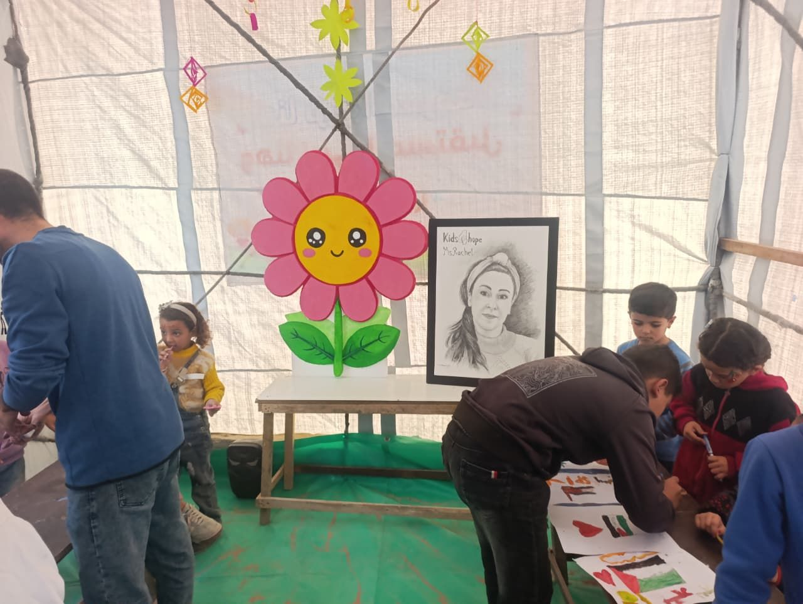
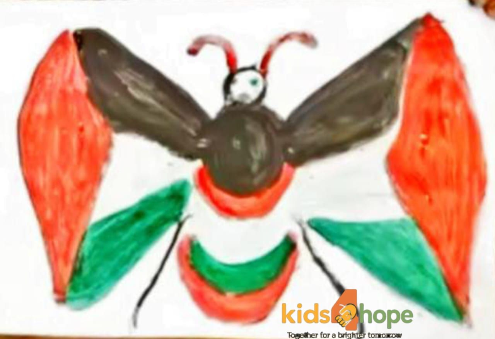

Auf einen Blick
Together for a brighter tomorrow
Hasan und sein Team begleiten 140 Waisenkinder beim Lernen – im eigenen Schulzelt, mit Heften, Farben und Menschen, die verlässlich für sie da sind. Mehr auf kids4hope.com.
140Waisenkinder lernen bei Kids4Hope
1eigenes Schulzelt mit Tischen und Bänken
93 %der Schulgebäude in Gaza müssen neu gebaut oder grundlegend instand gesetzt werden (OCHA, 23.09.2026)
58.000+Waisen und Halbwaisen in Gaza (UNICEF über OCHA)
Einblicke
Ein Ort zum Lernen
Ein Schulzelt entsteht



Lernen





Freude & Gemeinschaft




Bilder der Kinder


Mehr erfahren
Über Kids4Hope
Unterstützen
Spenden und Patenschaften laufen über die eigene Website des Projekts: kids4hope.com →
Bitte vor jeder Unterstützung lesen
Diese Website nimmt kein Geld entgegen und leitet keines weiter. Das Projekt ist eine private Initiative: Spenden sind nicht steuerlich absetzbar, es gibt keine Spendenquittung, und es ist nicht von einer unabhängigen Stelle geprüft. Die Angaben beruhen auf den Schilderungen des Projekts.